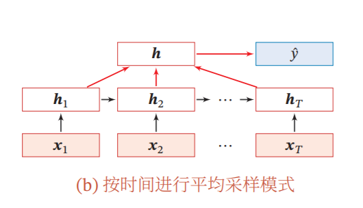

RNN情感分析
数据集
本次的task是文本分类，对于一个语句，判断它是否有恶意。数据集来源于李宏毅教授的Machine Learning课程，同时能在Kaggle上找到相关比赛。
数据集包括:
- 20w有标注的训练样本
- 120w没有标注的训练样本(可用于训练Word2vec以及做semi-supervised learning)
- 20w测试样本
模型简介
RNN
RNN(Recurrent Neural Network)，循环神经网络，利用了隐藏层来记忆数据，所以在
处理序列数据上相较于普通的神经网络能够提取出序列的顺序信息，因此被广泛运用于NLP领域。最初的RNN模型被称作simple RNN，在此基础上改进得到了LSTM，GRU模型，一定程度上解决了simple RNN中存在的长程依赖和记忆容量问题。
Word2vec
Word2vec是一种词嵌入模型，通过无监督学习从文本中提取出词之间的信息，从而得到每一个词的低维向量表示。由于Word2vec利用文本的信息来提取词之间的相关性，因此相较于one-hot这种离散表示更有利于神经网络学习，关于Word2vec的更多可以参考这篇文章：秒懂词向量Word2vec的本质。
代码
李弘毅教授提供的示例代码colab：传送门
加载数据
1 | import re |
1 | train_label_x = [] |
训练Word2vec
1 | from gensim.models import word2vec |
使用了gensim的Word2vec，gensim是一个主题模型的库，提供了很多主题模型和词嵌入模型的实现。
数据预处理
1 | import re |
导入Word2vec模型
1 | class Preprocessing: |
定义一个预处理类，类中包含一些对数据进行预处理的函数：
Preprocessing.add_word2embedding(word, vector)用一个向量赋值给一个新词并添加到embedding矩阵中Preprocessing.mk_embedding()利用Word2vec模型中的字典重新生成一个从词到向量的字典，不用原本的字典是为了方便添加新的词Preprocessing.seq_padding(sequences)对每个序列的补<PAD>或者截断来使其长度一致Preprocessing.remove_punctuation(sequences)去除每个序列中的标点符号Preprocessing.seq_word2seq_idx(sequences)把词序列转换成序号的序列
1 | prepocessing = Preprocessing(model) |
输出预处理之后的序列：
1 | # Input |
定义模型
1 | from torch import nn |
torch的LSTM在每个输入都会产生一个输出，然后将每个输出作为输入连接到一个分类器中，最终由分类器得到一个结果。

定义数据集
1 | from torch.utils.data import Dataset, DataLoader |
对数据集进行定义，方便之后DataLoader使用
训练模型
1 | import time |
首先统计一下需要训练的模型参数
1 | num_epoch = 5 |
非常常规的模型训练过程，但是我在写这部分代码的时候遇到了bug卡了很久，因为它的报错信息写的很难懂，后面发现把模型的参数和输入重新设到cpu上之后报错就能看懂了，也推荐大家在代码调试阶段先在cpu上跑，没有错误之后再放到cuda里面运行。
输出预测
1 | model.eval() |
最后将预测输出为csv文件就能提交到kaggle上，最终的准确率和验证集上的结果接近。